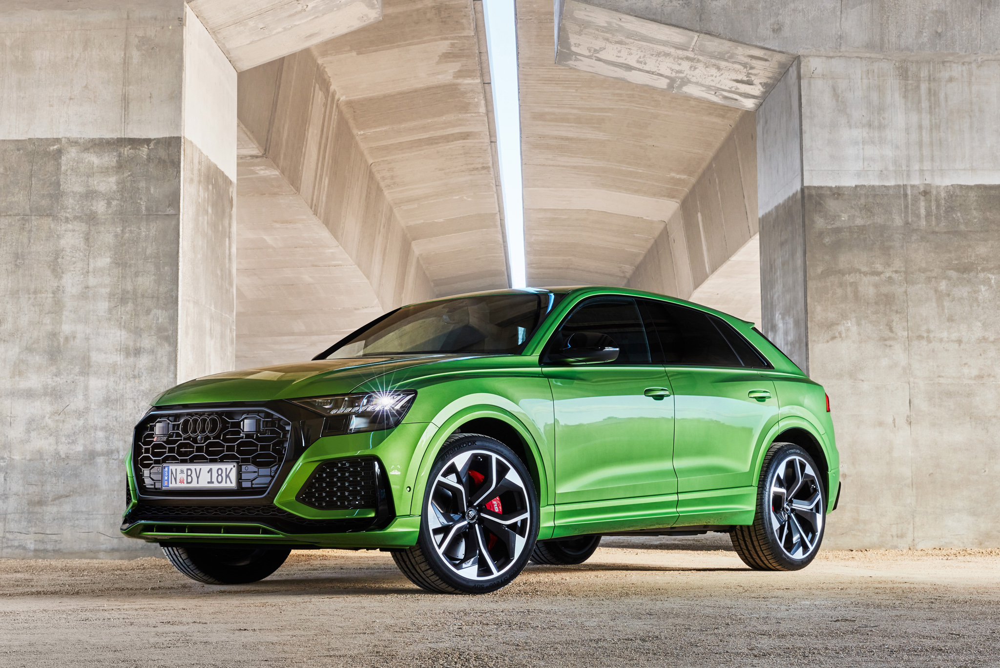

-
BMW
BMW-X6
The creation of BMW X6 was inspired from the automaker’s previous models, the series of BMW 5 and 6. Formally known as E71 in its first generation, the X6 was introduced in the automobile industry as the unique Sports Activity Coupe (or SAC).
HONDA
Honda CR-V Variants
Coupled with the Intelligent Control System, the Honda CR-V’s driver gains both comfort and confidence in tackling even the roughest conditions he or she may encounter.
AUDI
Audi RS Q8
To help the driver and passengers become aware of activity surrounding the Audi RS Q8, the vehicle is equipped with an array of sensors and cameras that can help alert the driver of potential emergencies. In some cases, while working within system limits, the standard and available driver assistance features can apply steering or braking input to help avoid an incident.
BUGATTI
Bugatti veyron
The Super Sport version of the Veyron is one of the fastest street-legal production cars in the world, with a top speed of 431.072 km/h (267.856 mph).[8] The Veyron Grand Sport Vitesse was the fastest roadster in the world, reaching an averaged top speed of 408.84 km/h (254.04 mph) in a test on 6 April 2013.[9][10]
JAGUAR
Jaguar XF
The Jaguar XF is a five-seat mid-size luxury sedan that is available with a choice of three engines: two turbocharged 2.0-liter four-cylinders (247 or 296 horsepower) or a supercharged 3.0-liter V-6 (380 hp). The supercharged V-6 works exclusively with all-wheel drive; the other engines come with rear- or all-wheel drive. All models use an eight-speed automatic transmission.
MERCEDES

Mercedes Benz SL Class
Indulge in both comfort and power with the Mercedes Benz SL Class. And just how it is marketed, you’ll truly fall in love with this vehicle; again and again!
NISSAN
Nissan leaf
The Nissan Leaf, stylised as LEAF, is a compact five-door hatchback battery electric vehicle manufactured by Nissan
FERRARI
Ferrari 458
This is one of the rarest cars in the world that achieves a delicate balance between precisely engineered aerodynamics and soulful design. The idea was to create a beautiful car that was lighter and more aerodynamic than the previous Ferarri F430, which did not receive a very desirable welcome. The design was somewhat reminiscent of the Ferarri Enzo, one of the most iconic super-cars in the industry, while the engine was a strong 4.5-L V8 engine.
ROLLSROYCE
Rolls-royce Phantom
The quietest Rolls-Royce cabin ever conceived is a cosseting and tranquil haven. Cutting-edge technology is discreetly placed to ensure nothing detracts from the sheer pleasure of splendid carriage only Phantom can deliver.
BETLEY